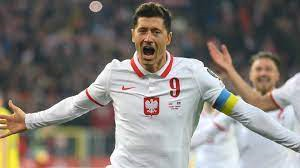

Records
Open Sidebar

Most Capped Players
Players in blue are still active
| Rank |
Player |
Caps |
Goals |
Career |
| 1 |
Robert Lewandowski |
138 |
78 |
2008 - present |
| 2 |
Jakub Blaszczykowski |
108 |
21 |
2006 - 2019 |
| 3 |
Kamil Glik |
103 |
6 |
2010 - present |
| 4 |
Michal Zewlakow |
102 |
3 |
1999 - 2011 |
| 5 |
Grzegorz Lato |
100 |
45 |
1971 - 1984 |
| 6 |
Grzegorz Krychowiak |
98 |
5 |
2008 - present |
| 7 |
Kazimierz Deyna |
97 |
41 |
1968 - 1978 |
| 8 |
Jacek Bak |
96 |
3 |
1993 - 2008 |
| 8 |
Jacek Krzynowek |
96 |
15 |
1998 - 2009 |
| 10 |
Wladyslaw Zmuda |
91 |
2 |
1973 - 1986 |
Top Goalscorers
| Rank |
Player
| Goals |
Caps |
Ratio |
Career |
| 1 |
Robert Lewandowski |
78 |
138 |
0.57 |
2008 - present |
| 2 |
Wlodzimierz Lubanski |
48 |
75 |
0.64 |
1963 - 1980 |
| 3 |
Grzegorz Lato |
45 |
100 |
0.45 |
1971 - 1984 |
| 4 |
Kazimierz Deyna |
41 |
97 |
0.42 |
1968 - 1978 |
| 5 |
Ernest Pol |
39 |
46 |
0.85 |
1955 - 1965 |
| 6 |
Andrzej Szarmach |
32 |
61 |
0.52 |
1973 - 1982 |
| 7 |
Gerard Cieslik |
27 |
45 |
0.60 |
1947 - 1958 |
| 8 |
Zbigniew Boniek |
24 |
80 |
0.30 |
1976 - 1988 |
| 9 |
Ernest Wilimowski |
21 |
22 |
0.95 |
1934 - 1939 |
| 9 |
Jakub Blaszczykowski |
21 |
108 |
0.19 |
2006 - 2019 |